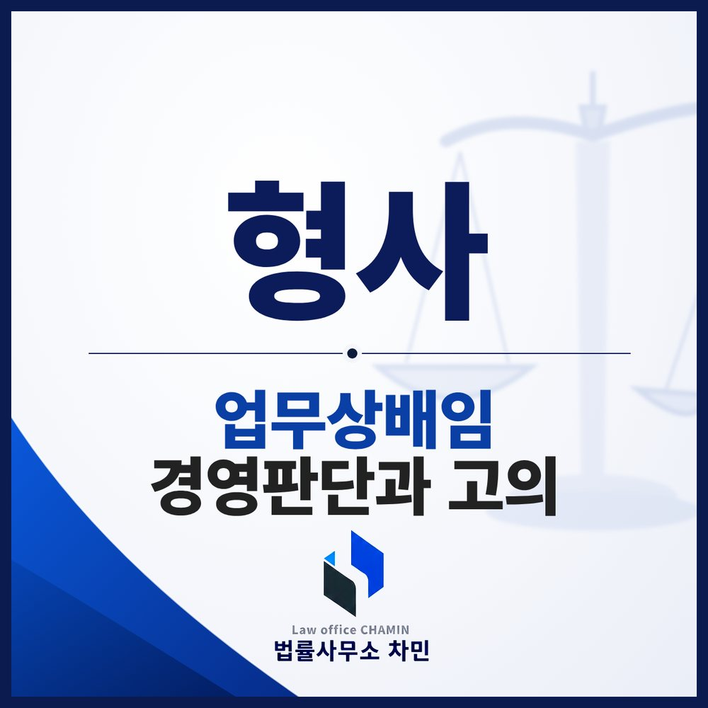

회사 돈이 크게 나갔는데 거래처가 공사를 마치지 않고 사라졌다면, 대표이사는 피해자일까요, 배임 피의자일까요? 배임은 손해가 아니라 임무위배와 고의로 판단합니다.

이런 사건이 생각보다 많습니다
한 회사의 대표이사가 창고 증축 공사를 맡길 업체를 찾다가, 지인의 소개로 한 시공업체와 계약을 맺고 선급금 등으로 수억 원을 지급했습니다. 그런데 업체는 공사를 제대로 마치지 않고 연락을 끊었습니다. 얼마 뒤 경영진이 바뀌었고, 새 경영진은 “부실한 업체인 줄 알면서 공사를 맡긴 것 아니냐, 소개해 준 사람에게 수수료까지 주지 않았느냐”며 전 대표이사를 업무상배임으로 고소했습니다. (실제 사건을 바탕으로 세부 내용을 바꾼 예시입니다.)
고소장만 보면 의심스러워 보일 수 있습니다. 회사 돈이 크게 나갔고, 공사는 끝나지 않았고, 중간에 소개한 사람에게 돈이 건너갔다는 사정까지 있기 때문입니다. 그러나 이것만으로 배임이 되는 것은 아닙니다.
회사에 손해가 났다고 배임이 되는 것은 아닙니다
배임죄는 타인의 사무를 처리하는 사람이 그 임무에 위배하는 행위로 자기나 제3자에게 재산상 이익을 얻게 하고 본인에게 손해를 가할 때 성립합니다(형법 제355조 제2항). 업무상 그런 지위에 있다면 업무상배임으로 10년 이하의 징역 또는 3천만 원 이하의 벌금에 처해집니다(형법 제356조). 범행으로 얻거나 제3자가 얻게 한 이득액이 5억 원 이상이면 특정경제범죄 가중처벌 등에 관한 법률에 따라 더 무겁게 처벌됩니다(같은 법 제3조).
핵심은 “손해”가 아니라 “임무위배”와 “고의”입니다. 결과적으로 회사에 손해가 났더라도, 당시 대표이사가 회사의 이익을 위해 판단했고 업체에 속은 것이라면, 회사는 사기 피해를 입은 것이지 대표이사가 업체를 위해 배임을 한 것이 아닙니다.
경영판단과 배임을 가르는 기준
대법원은 기업 경영에는 원래 위험이 따르기 때문에, 경영자가 개인적인 이익을 취할 의도 없이 선의로, 가능한 범위에서 수집한 정보를 바탕으로 회사 이익에 맞는다고 믿고 신중하게 결정했는데 예측이 빗나가 손해가 난 경우까지 배임으로 처벌해서는 안 된다고 보았습니다(대법원 2004. 7. 22. 선고 2002도4229 판결).
그래서 배임의 고의는 다음과 같은 사정을 종합해, 자기나 제3자가 이익을 얻고 회사에 손해를 가한다는 인식 아래 의도적으로 한 행위라고 인정될 때에만 인정됩니다. 단순히 손해가 났다는 결과나 주의를 소홀히 했다는 과실만으로는 책임을 물을 수 없습니다.
- 그 판단에 이르게 된 경위와 동기
- 사업의 내용과 회사가 처한 경제적 상황
- 손실이 날 가능성과 이익을 얻을 가능성
- 대표이사 본인이나 가까운 사람이 얻은 이익이 있는지
이 사건에서 정리해야 할 사실
위 예시라면 다음과 같은 사실을 자료와 함께 정리하는 것이 방어의 중심이 됩니다.
- 업체 선정 경위 — 업체가 제시한 시공 실적, 견적 비교, 내부 검토 과정. 이해관계 없는 입장에서 업체를 골랐다는 점
- 업체에 속은 정황 — 업체가 보증보험 내용이나 시공 능력에 관해 사실과 다른 자료를 냈다면 그 자료. 공사가 정상적으로 진행될 것이라 믿을 만한 사정
- 돈의 흐름 — 선급금이 계약 조건에 따른 것이었는지, 소개 수수료가 통상적인 거래 관행 범위였는지, 그 돈이 대표이사 개인에게 돌아오지 않았다는 점
- 사후 대응 — 업체가 공사를 중단한 뒤 회사가 계약 해지, 손해배상 청구, 형사 고소 등으로 피해를 회복하려 했는지
“회사를 위해 일했을 뿐”이라는 말은 이런 자료로 뒷받침될 때 설득력이 생깁니다.
조사 전 준비와 의견서
배임 사건은 사실관계가 복잡하고, 고소인은 대개 회사 내부 자료를 쥐고 있습니다. 첫 조사 전에 수사관이 무엇을 물을지, 어떤 표현이 오해를 부를 수 있는지 점검해 두는 것이 좋습니다. 예를 들어 “소개비”라는 말 하나도 어떤 명목이었고 누구에게 갔는지 정확히 설명하지 않으면 “회사 돈을 빼돌린 것”으로 오해받을 수 있습니다.
조사를 받은 뒤에는 고소인의 주장을 파악해 의견서로 정리합니다. 좋은 의견서는 다음 순서로 사실관계를 세웁니다.
- 상대방의 주장은 무엇이고, 어디가 사실과 다른지
- 상대방이 내세우는 증거는 무엇이고, 왜 그대로 믿기 어려운지
- 우리 쪽 증거는 무엇이고, 상대방 주장과 맞춰 보면 어떤 의미가 되는지
주장과 증거를 하나씩 대응시켜, “당시 대표이사로서 회사의 이익을 위해 중립적으로 판단했고, 손해는 업체의 기망 때문에 생긴 것”이라는 결론에 이르게 하는 것이 목표입니다.
군산에서 배임으로 고소당했다면
군산에서 고소된 사건은 대개 군산경찰서가 수사하고, 기소되면 전주지방법원 군산지원에서 재판이 열립니다. 경영진 교체 뒤에 고소가 들어온 사건이라면, 고소인 측이 가진 자료와 내가 가진 자료를 비교해 빠진 것이 없는지부터 확인하는 것이 좋습니다. 퇴임하면서 자료에 접근하기 어려워졌다면, 필요한 자료를 어떻게 확보할지도 함께 검토해야 합니다.